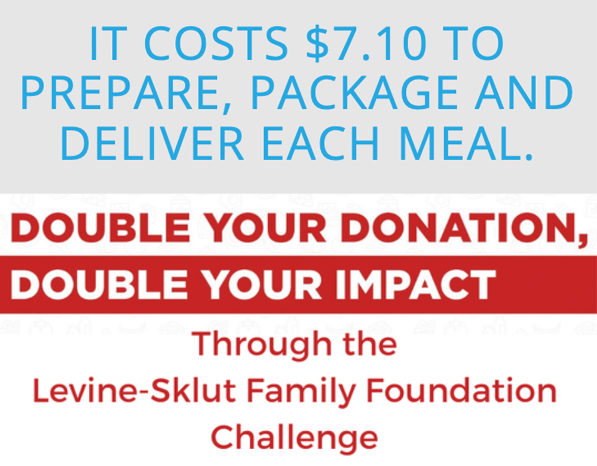
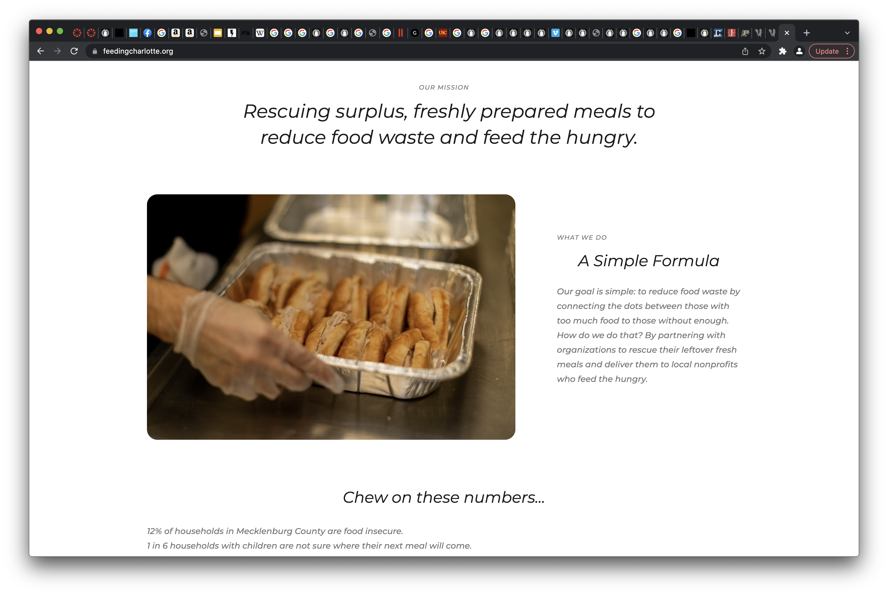
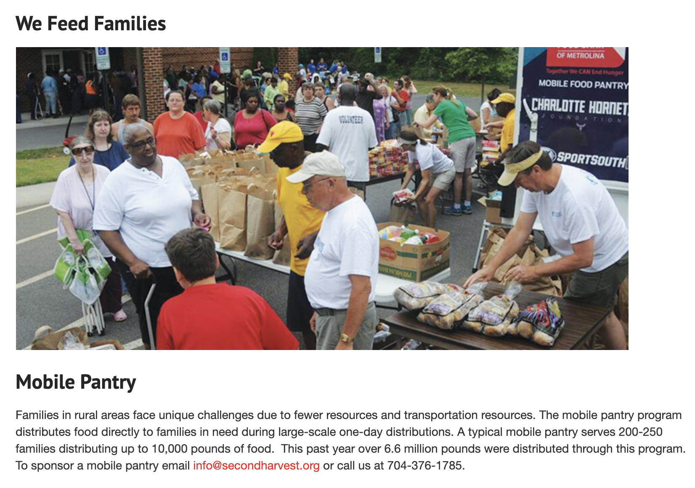
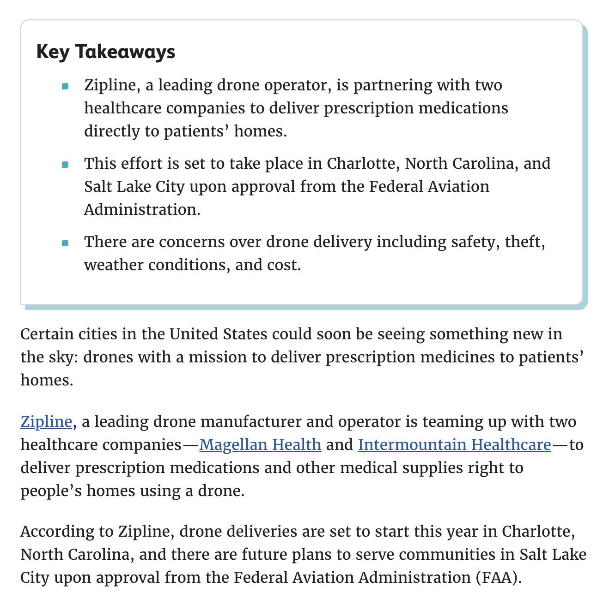

Research
Nullam posuere erat vel placerat rutrum. Praesent ac consectetur dui, et congue quam. Donec aliquam lacinia condimentum.

The first logo's light blue and some shades of blue very close to it appear throughout the website; this is the most consistently used color in the brand’s palette. The second image is a variation of the brand’s logo, but in a purple/blue color.
The first logo’s light blue and some shades of blue very close to it appear throughout the website; this is the most consistently used color in the brand’s palette. The second image is a variation of the brand’s logo, but in a purple/blue color.

Some of the branding (on the website and social media) features all capitalized type on posters, etc.
Some supplementary colors in the palette seem to be red, orange, and green.
 The social media feed seems to be comprised of lots of photos and some graphics, but it doesn’t have an immediate visual theme; the posts don’t aesthetically convey the brand right away. The client appears to prioritize showing both the people who are serving meals and those being served. The overall brand identity could be pushed more through consistent inclusion of brand colors and graphics, while still including lots of photos to stay true to the client’s people-centered purpose.
The social media feed seems to be comprised of lots of photos and some graphics, but it doesn’t have an immediate visual theme; the posts don’t aesthetically convey the brand right away. The client appears to prioritize showing both the people who are serving meals and those being served. The overall brand identity could be pushed more through consistent inclusion of brand colors and graphics, while still including lots of photos to stay true to the client’s people-centered purpose.
One thing that I noticed about the client is that the color of their logo varies across the site. At the top of the website, the logo is a light blue, but there is a purple/blue version of it further down on the page. The first lighter blue color is mostly consistent across branding, but the shades vary slightly if you look closely. One shade of this lighter blue needs to be solidified throughout the site, social media, etc. in order to maintain brand consistency. There are a lot of big sections of only text on the website, which makes these parts visually overwhelming. Visitors of the site are less likely to pay attention to the content when they see the big chunks of information. In addition, there are many typefaces used on the website, which can make it seem less organized.
Secondary Research
  Recent News and Innovations
Second Harvest has a mobile food bank that distributes meals to the area. There could be a few mobile kitchens, which will expand the project’s scope by creating multiple distribution pints that can be parked wherever they are needed at the moment. One recent innovation in the field that worked well was “rescuing” excess food from restaurants to give to homeless people or people going hungry (Feeding Charlotte); while the people receiving the meals from Friendship Trays are not homeless or going hungry, this concept could still apply to their meals. Taking extra food and giving it to people who need it is beneficial in many ways.
One innovation that wouldn’t work to apply to Friendship Trays is the idea of drones delivering goods (in one case medicine); it takes away the human interaction aspect of what makes Friendship Trays so special and impactful.
Market Data
According to Sweor, 85% of adults think that a company’s website when viewed on a mobile device should be as good or better than its desktop website. This means that, in order to maximize engagement and elicit a positive response to the FT website, it will be important to make the site responsive and just as easy to use and aesthetically pleasing on mobile. Also, from the same source, 77% of agencies believe that a bad website User Experience is a weakness for their clients. This means that it will be important to make user requirements very minimal, positive, and easy to use. Also, it takes 2.6 seconds for a user’s eyes to land on the area of a website that most influences their first impression; visual hierarchy needs to be improved.